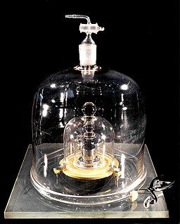

Experimental Design Principles
Last updated on 2024-03-28 | Edit this page
Overview
Questions
- What are the core principles of experimental design?
Objectives
- The way in which a design applies treatments to experimental units and measures the responses will determine 1) what questions can be answered and 2) with what precision relationships can be described.
- The core principles guiding the way are 1) replication, 2) randomization and 3) blocking.
Variability is natural in the real world. A medication given to a group of patients will affect each of them differently. A specific diet given to a cage of mice will affect each mouse differently. Ideally if something is measured many times, each measurement will give exactly the same result and will represent the true value. This ideal doesn’t exist in the real world. For example, the mass of one kilogram is defined by the International Prototype Kilogram, a cylinder composed of platinum and iridium about the size of a golf ball. 
Copies of this prototype kilogram (replicates) are distributed worldwide so each country hosting a replica has its own national standard kilogram. None of the replicas measure precisely the same despite careful storage and handling. The reasons for this variation in measurements are not known. A kilogram in Austria differs from a kilogram in Australia, which differs from that in Brazil, Kazakhstan, Pakistan, Switzerland or the U.S. What we assume is an absolute measure of mass shows real-world natural variability. Variability is a feature of natural systems and also a natural part of every experiment we undertake.
Replication to characterize variability
To figure out whether a difference in responses is real or inherently random, replication applies the same treatment to multiple experimental units. The variability of the responses within a set of replicates provides a measure against which we can compare differences among different treatments. This variability is known as experimental error. This does not mean that something was done wrongly! It’s a phrase describing the variability in the responses. Random variation is also known as random error or noise. It reflects imprecision, but not inaccuracy. Larger sample sizes reduce this imprecision.
In addition to random (experimental) error, also known as noise, there are two other sources of variability in experiments. Systematic error or bias, occurs when there are deviations in measurements or observations that are consistently in one particular direction, either overestimating or underestimating the true value. As an example, a scale might be calibrated so that mass measurements are consistently too high or too low. Unlike random error, systematic error is consistent in one direction, is predictable and follows a pattern. Larger sample sizes don’t correct for systematic bias; equipment or measurement calibration does. Technical replicates define this systematic bias by running the same sample through the machine or measurement protocol multiple times to characterize the variation caused by equipment or protocols.
A biological replicate measures different biological samples in parallel to estimate the variation caused by the unique biology of the samples. The sample or group of samples are derived from the same biological source, such as cells, tissues, organisms, or individuals. Biological replicates assess the variability and reproducibility of experimental results. For example, if a study examines the effect of a drug on cell growth, biological replicates would involve multiple sets of cells from the same cell line to test the drug’s effects. This helps to ensure that any observed changes are due to the drug itself rather than variations in the biological material being used.
The greater the number of replications, the greater the precision (the closeness of two or more measurements to each other). Having a large enough sample size to ensure high precision is necessary to ensure reproducible results.
Exercise 1: Which kind of error?
A study used to determine the effect of a drug on weight loss could
have the following sources of experimental error. Classify the following
sources as either biological, systematic, or random error.
1). A scale is broken and provides inconsistent readings.
2). A scale is calibrated wrongly and consistently measures mice 1 gram
heavier.
3). A mouse has an unusually high weight compared to its experimental
group (i.e., it is an outlier).
4). Strong atmospheric low pressure and accompanying storms affect
instrument readings, animal behavior, and indoor relative humidity.
1). random, because the scale is broken and provides any kind of
random reading it comes up with (inconsistent reading)
2). systematic
3). biological
4). random or systematic; you argue which and explain why
These three sources of error can be mitigated by good experimental design. Systematic and biological error can be mitigated through adequate numbers of technical and biological replicates, respectively. Random error can also be mitigated by experimental design, however, replicates are not effective. By definition random error is unpredictable or unknowable. For example, an atmospheric low pressure system or a strong storm could affect equipment measurements, animal behavior, and indoor relative humidity, which introduces random error. We could assume that all random error will balance itself out, and that all samples will be equally subject to random error. A more precise way to mitigate random error is through blocking.
Randomization
Exercise 2: The efficient technician
Your technician colleague finds a way to simplify and expedite an
experiment. The experiment applies four different wheel-running
treatments to twenty different mice over the course of five days. Four
mice are treated individually each day for two hours each with a random
selection of the four treatments. Your clever colleague decides that a
simplified protocol would work just as well and save time. Run treatment
1 five times on day 1, treatment 2 five times on day 2, and so on. Some
overtime would be required each day but the experiment would be
completed in only four days, and then they can take Friday off! Does
this adjustment make sense to you?
Can you foresee any problems with the experimental results?
Since each treatment is run on only one day, the day effectively becomes the experimental unit (explain this). Each experimental unit (day) has five samples (mice), but only one replication of each treatment. There is no valid way to compare treatments as a result. There is no way to separate the treatment effect from the day-to-day differences in environment, equipment setup, personnel, and other extraneous variables.
Why should treatments be randomly assigned to experimental units? Randomization minimizes bias and moderates experimental error (a.k.a. noise). A hat full of numbers, a random number table or a computational random number generator can be used to assign random numbers to experimental units so that any experimental unit has equal chances of being assigned to a specific treatment group.
Here is an example of randomization using a random number generator. The study asks how a high-fat diet affects blood pressure in mice. If the number is odd, the sample is assigned to the treatment group, which receives the high-fat diet. If the random number is even, the sample is assigned to the control group (the group that doesn’t receive the treatment, in this case, regular chow).
R
# create the mouse IDs and 26 random numbers between 1 and 100
mouse_ID <- LETTERS
random_number <- sample(x = 100, size = 26)
# %% is the modulo operator, which returns the remainder from division by 2
# if the remainder is 0 (even number), regular chow diet is assigned
treatment <- ifelse(random_number %% 2 == 0, "chow", "high fat")
random_allocation <- data.frame(mouse_ID, random_number, treatment)
random_allocation
OUTPUT
mouse_ID random_number treatment
1 A 42 chow
2 B 38 chow
3 C 19 high fat
4 D 54 chow
5 E 8 chow
6 F 58 chow
7 G 17 high fat
8 H 15 high fat
9 I 26 chow
10 J 81 high fat
11 K 48 chow
12 L 44 chow
13 M 79 high fat
14 N 87 high fat
15 O 36 chow
16 P 84 chow
17 Q 66 chow
18 R 25 high fat
19 S 9 high fat
20 T 77 high fat
21 U 2 chow
22 V 28 chow
23 W 31 high fat
24 X 91 high fat
25 Y 74 chow
26 Z 1 high fatThis might produce unequal numbers between treatment and control groups. It isn’t necessary to have equal numbers, however, sensitivity or statistical power (the probability of detecting an effect when it truly exists) is maximized when sample numbers are equal.
R
table(random_allocation$treatment)
OUTPUT
chow high fat
14 12 To randomly assign samples to groups with equal numbers, you can do the following.
R
# place IDs and random numbers in data frame
equal_allocation <- data.frame(mouse_ID, random_number)
# sort by random numbers (not by sample IDs)
equal_allocation <- equal_allocation[order(random_number),]
# now assign to treatment or control groups
treatment <- sort(rep(x = c("chow", "high fat"), times = 13))
equal_allocation <- cbind(equal_allocation, treatment)
row.names(equal_allocation) <- 1:26
equal_allocation
OUTPUT
mouse_ID random_number treatment
1 Z 1 chow
2 U 2 chow
3 E 8 chow
4 S 9 chow
5 H 15 chow
6 G 17 chow
7 C 19 chow
8 R 25 chow
9 I 26 chow
10 V 28 chow
11 W 31 chow
12 O 36 chow
13 B 38 chow
14 A 42 high fat
15 L 44 high fat
16 K 48 high fat
17 D 54 high fat
18 F 58 high fat
19 Q 66 high fat
20 Y 74 high fat
21 T 77 high fat
22 M 79 high fat
23 J 81 high fat
24 P 84 high fat
25 N 87 high fat
26 X 91 high fatYou can write out this treatment plan to a comma-separated values (csv) file, then open it in Excel and use it to record your data collection or just keep track of which samples are randomly assigned which diet.
R
write.csv(equal_allocation, file = "../data/random-assign.csv", row.names = FALSE)
WARNING
Warning in file(file, ifelse(append, "a", "w")): cannot open file
'../data/random-assign.csv': No such file or directoryERROR
Error in file(file, ifelse(append, "a", "w")): cannot open the connection1). Scenario: One technician processed samples A through M, and a
different technician processed samples N through Z. Might the first
technician have processed samples somewhat differently from the second
technician? If so, there would be a “technician effect” in the results
that would be difficult to separate from the treatment effect. 2).
Another scenario: Samples A through M were processed on a Monday, and
samples N through Z on a Tuesday. Might the weather or the environment
in general have been different between Monday and Tuesday? What if a big
construction project started on Tuesday, or the whole team had a
birthday gathering for one of their members, or anything else in the
environment differed between Monday and Tuesday? If so, there would be a
“day-of-the-week effect” in the results that would be difficult to
separate from the treatment effect. 3). Yet another scenario: Samples A
through M were from one strain, and samples N through Z from a different
strain. How would you be able to distinguish between the treatment
effect and the strain effect? 4). Yet another scenario: Samples with
consecutive ids were all sibling groups. For example, samples A, B and C
were all siblings, and all assigned to the same treatment.
All of these cases would have introduced an effect (from the technician,
the day of the week, the strain, or sibling relationships) that would
confound the results and lead to misinterpretation.
Controlling Natural Variation with Blocking
Experimental units can be grouped, or blocked, to increase the precision of treatment comparisons. Blocking divides an experiment into groups of experimental units to control natural variation among these units. Treatments are randomized to experimental units within each block. Each block, then, is effectively a sub-experiment.
Randomization within blocks accounts for nuisance variables that could bias the results, such as day, time, cage proximity to light or ventilation, etc. In the illustration below, three treatments are randomized to the experimental units (the cages) on each shelf. Each shelf is a block that accounts for random variation introduced by a nuisance variable, proximity to the light.
Shelf height is a blocking factor that should be included in the data analysis phase of the experiment. Adding a nuisance variable as a blocking factor accounts for variability and can increase the probability of detecting a real treatment effect (statistical power). If the blocking factor doesn’t substantially impact variability, however, it reduces the information used to estimate a statistic (degrees of freedom) and diminishes statistical power. Blocking should only be used when a variable is suspected to impact the experiment.
Another way to define blocks of experimental units is to use characteristics or traits that are likely associated with the response. Sex and age, for example, can serve as blocking factors in experiments, with experimental units randomly allocated to each block based on age category and sex. Stratified randomization places experimental units into separate blocks for each age category and sex. As with nuisance variables, these blocking factors (age and sex) should be used in the subsequent data analysis.
Exercise 3: Explain blocking to the efficient technician
Your technician colleague is not only efficient but very well-organized. They will administer treatments A, B and C shown in the figure above.
- Explain to your colleague why the treatments should not be administered by shelf (e.g. the top shelf all get treatment A, the next shelf B and the lower shelf treatment C).
- Explain blocking to the technician and describe how it helps the experiment.
Exercise 4: How and when to set up blocks
For the following scenarios, describe whether you would set up blocks and if so, how you would set up the blocks.
- A large gene expression study will be run in five different batches or runs.
- An experiment will use two different models of equipment to obtain measurements.
- Samples will be processed in the morning, afternoon and evening.
- In a study in which mice were randomly assigned to treatment and control groups, the air handler in the room went off and temperature and humidity increased.